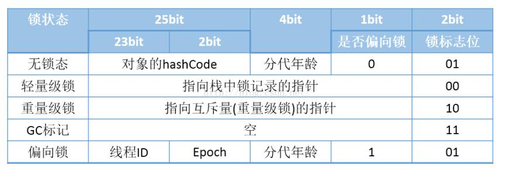

注：本文中的部分内容摘抄自他人博客，如有侵权，请联系我，侵删~
本篇博客主要讲述 synchronized 关键字的实现原理以及 JDK 1.6 后对 synchronized 的种种优化。synchronized 的使用不再赘述。
博主目前依旧存在的疑惑
请在阅读完此篇博客之后，帮助博主回答这三个问题：
- 多线程争夺 Monitor 的具体过程是怎样的？是根据 ObjectMonitor 中的 _count 值判断当前 Monitor 是否被锁定吗？
- JVM 如果检测到在单线程环境下执行同步代码（StringBuffer），是会进行锁消除呢，还是会使用偏向锁？
- 对于偏向锁的撤销过程及膨胀过程，博主只是在一些博客的基础上给出了自己的理解！不权威，建议阅读源码，博主对这部分知识的讲解持怀疑态度，如果在阅读的过程中发现博主对偏向锁的撤销与膨胀理解有误，请指出，感激不尽~（网上基本上没有从源码角度分析的，对于偏向锁撤销与升级的详细过程也是众说纷纭）
引言
我们先来看一份代码：
1 | public class SynchronizedTest { |
对其进行 javap 反编译分析：
1 | javap -c SynchronizedTest.class |
对比 javap 的输出结果，我们做一个简单的总结：
同步方法：synchronized 方法会被翻译成普通的方法调用。在 JVM 字节码层面并没有任何特别的指令来实现被 synchronized 修饰的方法。在 Class 文件的方法表中将该方法的 access_flags 字段中的 synchronized 标志位置 1，表示该方法是同步方法并使用调用该方法的对象（对象锁）或该方法所属的 Class（类锁） 做为锁对象。
同步块：monitorenter 指令插入到同步代码块的开始位置，monitorexit 指令插入到同步代码块的结束位置，JVM 需要保证每一个 monitorenter 都有一个 monitorexit 与之相对应。任何对象都有一个 monitor 与之相关联，当且一个 monitor 被持有之后，他将处于锁定状态。线程执行到 monitorenter 指令时，将会尝试获取对象所对应的 monitor 所有权，即尝试获取对象的锁。（关于上述字节码中一个 monitorenter 指令为什么对应两个 monitorexit 指令我们稍后进行说明）
synchronized底层语义原理
Java对象头
要深入理解 synchronized 的实现原理，先来了解一下 Java 对象头。
对象在堆中由三部分组成：
- 对象头
- 实例变量
- 填充数据
- 实例变量：存放类的属性数据信息，包括父类的属性信息，如果是数组的实例部分还包括数组的长度，这部分内存按4字节对齐。
- 填充数据：由于虚拟机要求对象起始地址必须是 8 字节的整数倍。填充数据不是必须存在的，仅仅是为了字节对齐。
- 对象头：HotSpot 虚拟机的对象头主要包括两部分数据：Mark Word（标记字段）、Class Point（类型指针）。其中 Class Point 是对象指向它的类元数据的指针，虚拟机通过这个指针来确定这个对象是哪个类的实例，Mark Word 用于存储对象自身的运行时数据，它是实现轻量级锁和偏向锁的关键。它还用于存储对象自身的运行时数据，如哈希码（HashCode）、GC分代年龄、锁状态标志、线程持有的锁、偏向线程 ID、偏向时间戳等等。
Java 对象头一般占有两个字宽（在 32 位虚拟机中，1 个字宽等于 4 字节，也就是 32bit），但是如果对象是数组类型，则需要三个字宽，因为 JVM 虚拟机可以通过 Java 对象的元数据信息确定 Java 对象的大小，但是无法从数组的元数据来确认数组的大小，所以用一块来记录数组长度。
对象头的存储结构如下：
| 长度 | 内容 | 说明 |
|---|---|---|
| 32/64 bit | Mark Word | 存储对象的 hashCode 或锁信息等。 |
| 32/64 bit | Class Metadata Address | 存储到对象类型数据的指针 |
| 32/64 bit | Array length | 数组的长度（如果当前对象是数组） |
32 位 JVM 的 Mark Word 的默认存储结构如下：
| 锁状态 | 25bit | 4bit | 1bit是否是偏向锁 | 2bit 锁标志位 |
|---|---|---|---|---|
| 无锁状态 | 对象HashCode | 对象分代年龄 | 0 | 01 |
由于对象头的信息是与对象自身定义的数据没有关系的额外存储成本，因此考虑到 JVM 的空间效率，Mark Word 被设计成为一个非固定的数据结构，以便存储更多有效的数据，它会根据对象本身的状态复用自己的存储空间，如 32 位 JVM 下，除了上述列出的 Mark Word 默认存储结构外，还有如下可能变化的结构：

Monitor（管程）
- 什么是 Monitor（管程）？
我们可以把它理解为一个同步工具，也可以描述为一种同步机制，它通常被描述为一个对象。所有的 Java 对象都是天生的 Monitor，在 Java 的设计中 ，每一个 Java 对象都带了一把看不见的锁，它叫做内置锁或者 Monitor 锁。
观察 Mark Word 存储结构的那张图（上图）：
这里我们主要分析一下重量级锁也就是通常说 synchronized 的对象锁，锁标识位为 10，其中指针指向的是 monitor 对象（也称为管程或监视器锁）的起始地址。每个对象都存在着一个 monitor 与之关联，对象与其 monitor 之间的关系存在多种实现方式，如 monitor 可以与对象一起创建销毁或当线程试图获取对象锁时自动生成，但当一个 monitor 被某个线程持有后，它便处于锁定状态。在 Java 虚拟机(HotSpot)中，monitor 是由 ObjectMonitor 实现的，其主要数据结构如下：（位于 HotSpot 虚拟机源码 ObjectMonitor.cpp 文件，C++实现）
1 | ObjectMonitor() { |
ObjectMonitor 中有两个队列，_WaitSet 和 _EntryList，用来保存 ObjectWaiter 对象列表( 每个等待锁的线程都会被封装成 ObjectWaiter 对象)，_owner 指向持有 ObjectMonitor 对象的线程，当多个线程同时访问一段同步代码时，首先会进入 _EntryList 集合，当线程获取到对象的 monitor 后会把 monitor 中的 _owner 变量设置为当前线程，同时 monitor 中的计数器 _count 加 1。若线程调用 wait() 方法，将释放当前持有的 monitor，_owner 变量恢复为 null，_count 自减 1，同时该线程进入 _WaitSet 集合中等待被唤醒。若当前线程执行完毕也将释放 monitor（锁）并复位变量的值，以便其它线程进入获取 monitor(锁)。
由此看来，monitor 对象存在于每个 Java 对象的对象头中(存储的是指针)，synchronized 便是通过这种方式获取锁的，也是为什么 Java 中任意对象可以作为锁的原因，同时也是 notify/notifyAll/wait 等方法存在于顶级对象 Object 中的原因（锁可以是任意对象，所以可以被任意对象调用的方法是定义在 object 类中）。
synchronized方法底层原理
我们在引言部分对 synchronized 方法已经做了一个简单的总结，现在对它进行一点补充：
在 Java 早期版本中，synchronized 属于重量级锁，效率低下，因为监视器锁（monitor）是依赖于底层操作系统的 Mutex Lock 来实现的，而操作系统实现线程之间的切换时需要从用户态转换到核心态，这个状态之间的转换需要相对比较长的时间，时间成本相对较高，这也是为什么早期的 synchronized 效率低的原因。庆幸的是在 Java 6 之后 Java 官方从 JVM 层面对 synchronized 进行了较大优化，所以现在的 synchronized 锁效率也优化得很不错了。Java 6 之后，为了减少获得锁和释放锁所带来的性能消耗，引入了轻量级锁和偏向锁，关于锁优化的内容，我们稍后再谈。
synchronized代码块底层原理
在引言部分，我们对 synchronized 代码块也做了一个简单的总结。同样，对其做一点补充：
当执行 monitorenter 指令时，当前线程将试图获取对象锁所对应的 monitor 的持有权，当对象锁的 monitor 的进入计数器为 0，那线程可以成功取得 monitor，并将计数器值设置为 1，取锁成功。如果当前线程已经拥有对象锁的 monitor 的持有权，那它可以重入这个 monitor，重入时计数器的值会加 1。倘若其他线程已经拥有对象锁的 monitor 的所有权，那当前线程将被阻塞，直到正在执行的线程执行完毕，即 monitorexit 指令被执行，执行线程将释放 monitor 并设置计数器值为 0，其他线程将有机会持有 monitor。值得注意的是编译器将会确保无论方法通过何种方式完成，方法中调用过的每条 monitorenter 指令都有执行其对应 monitorexit 指令，无论这个方法是正常结束还是异常结束。为了保证在方法异常完成时 monitorenter 和 monitorexit 指令依然可以正确配对执行，编译器会自动产生一个异常处理器，这个异常处理器可处理所有的异常，它的目的就是用来执行 monitorexit 指令。从字节码中也可以看出多了一个 monitorexit 指令。
锁优化
自旋锁与自适应自旋
如前面所述，synchronized 在 JDK 1.6 之前之所以被称为“重量级锁”，是因为对于互斥同步的性能来说，影响最大的就是阻塞的实现。挂起线程与恢复线程的操作都需要转入内核态中完成。从用户态转入内核态是比较耗费系统性能的。
研究表明，大多数情况下，线程持有锁的时间都不会太长，如果直接挂起操作系统层面的线程可能会得不偿失，毕竟操作系统实现线程之间的切换时需要从用户态转换到核心态，这个状态之间的转换需要相对比较长的时间，时间成本相对较高。自旋锁会假设在不久将来，当前的线程可以获得锁，因此虚拟机会让当前想要获取锁的线程做几个空循环，使当前线程不放弃处理器的执行时间(这也是称为自旋的原因)，在经过若干次循环后，如果得到锁，就顺利进入临界区。
但是自旋不能代替阻塞，首先，自旋锁需要多处理器或一个处理器拥有多个核心的 CPU 环境，这样才能保证两个及以上的线程并行执行（一个是获取锁的执行线程，一个是进行自旋的线程）。除了对处理器数量的要求外，自旋虽然避免了线程切换的开销，但它是要占用处理器时间的，因此，如果锁被占用的时间比较短，自旋的效果就比较好，否则只是白白占用了 CPU 资源，带来性能上的浪费。
那么自旋就需要有一定的限度，如果自旋超过了一定的次数后，还没有成功获取锁，就只能进行挂起了，这个次数默认是 10。
在 JDK 1.4.2 中引入了自旋锁，在 JDK 1.6 中引入了自适应自旋锁。自适应意味自旋的时间不再固定：
如果同一个锁对象上，自旋等待刚刚成功获取锁，并且持有锁的线程正在运行，那么虚拟机就会认为此次自旋也很有可能成功，进而它将允许自旋等待持续相对更长的时间，比如 100 个循环。如果对于某个锁，自旋很少成功获取过，那么在以后获取这个锁时将可能自动省略掉自旋过程，以避免浪费处理器资源。有了自适应自旋，随着程序运行和性能监控信息的不断完善，虚拟机对程序锁的状况预测就会越来越精准，虚拟机也就会越来越“聪明”。
锁消除
消除锁是虚拟机另外一种锁的优化，这种优化更彻底，Java 虚拟机在 JIT 编译时(关于 JIT 编译可以参考我的这篇博客：JVM–解析运行期优化与JIT编译器)，通过对运行上下文的扫描，去除不可能存在共享资源竞争的锁，通过这种方式消除没有必要的锁，可以节省毫无意义的请求锁时间。
锁消除的主要判定依据来源于逃逸分析技术的支持(关于逃逸分析技术可以参考周志明老师所出的《深入理解 Java 虚拟机》一书中第 11 章内容或自行百度)。
也许你会有疑惑，变量是否逃逸，程序员本身应该就可以判断，怎么会存在明知道不存在数据争用的情况下还使用同步？来看如下代码：
1 | public String concatString(String s1, String s2, String s3) { |
由于 String 是一个不可变类，因此对字符串的连接操作总是通过新生成的 String 对象来进行的，在 JDK 1.5 之前，javac 编译器会对 String 连接进行自动优化，将连接转换为 StringBuffer 对象的连续 append 操作，在 JDK 1.5 之后，会转化为 StringBuilder 对象的连续 append 操作。也就是说，上述代码经过 javac 优化之后，有可能变为下面这样：
1 | public String concatString(String s1, String s2, String s3) { |
StringBuffer 是一个线程安全的类，在它的 append 方法中有一个同步块，锁对象就是 sb，但是虚拟机观察变量 sb，发现它是一个局部变量，本身线程安全，并不需要额外的同步机制。因此，这里虽然有锁，但可以被安全的清除，在 JIT 编译之后，这段代码就会忽略掉所有的同步而直接执行。这就是锁消除。
锁粗化
原则上，我们在使用同步块的时候，总是建议将同步块的作用范围限制的尽量小—使需要同步的操作数量尽可能变小，在存在锁竞争的情况下，等待锁的线程可以尽快的拿到锁。
大部分情况下，上述原则都正确，但是存在特殊情况，如果一系列操作下来，都对同一个对象反复加锁与解锁，甚至加锁与解锁操作出现在循环体中，那即使没有线程竞争，频繁的进行互斥同步操作也会导致不必要的性能损耗。
如上述代码中的 append 方法。如果虚拟机探测到了这样的操作，就会把加锁的同步范围扩展（粗化）到整个操作序列的外部。以上述代码为例，就是扩展到第一个 append 操作之前直至最后一个 append 操作之后，这样只需要加锁一次。
偏向锁
偏向锁会偏向第一个获取它的线程，如果在接下来的执行过程中，该锁没有被其他线程获取，则持有偏向锁的线程将永远不需要进行同步。
HotSpot 的作者经过以往的研究发现大多数情况下锁不仅不存在多线程竞争，而且总是由同一线程多次获得（比如在单线程中使用 StringBuffer 类），为了让线程获得锁的代价更低而引入了偏向锁。当锁对象第一次被线程获取的时候，虚拟机把对象头中的标志位设为“01”，即偏向模式。同时使用 CAS 操作把获取这个锁的线程 ID 记录在对象的 Mark Word 中，如果 CAS 操作成功，持有偏向锁的线程以后每次进入这个锁相关的同步块时，虚拟机都可以不用进行任何同步操作。
当有另一个线程去尝试获取这个锁时，偏向模式就宣告结束。

如上图，当线程 2 争夺锁对象时，偏向模式宣告结束。由线程 2 通知线程 1 进行偏向锁的撤销，此时线程 1 在全局安全点（没有字节码执行的地方）处进行暂停，进行解锁操作。
偏向锁只能被第一个获取它的线程进行 CAS 操作，一旦出现线程竞争锁对象，其它线程无论何时进行 CAS 操作都会失败。
在解锁成功之后，JVM 将判断当前线程的状态，如果还没有执行完同步代码块，则直接将偏向锁膨胀为轻量级锁，然后继续执行同步代码块，否则将偏向锁先撤销为无锁状态，当下一次执行同步代码块的时候再由 JVM 将其膨胀为轻量级锁。
使用偏向锁的优点在于在没有多线程竞争的情况下，只需进行一次 CAS 操作，就可执行同步代码块，但是我们也必须保证撤销偏向锁所耗费的性能资源要低于省去加锁取锁所节省下来的性能资源。
轻量级锁
偏向锁一旦受到多线程竞争，就会膨胀为轻量级锁。
偏向锁在执行同步块的时候不用做任何同步操作，而轻量级锁是在多线程交替执行同步代码块，不产生线程阻塞的情况下使用 CAS 操作去消除同步使用的互斥量。
轻量级锁加锁：线程在执行同步块之前，如果同步对象没有被锁定，JVM 会先在当前线程的栈桢中创建用于存储锁记录（Lock Record）的空间，并将对象头中的 Mark Word 复制到锁记录中，官方称为 Displaced Mark Word。然后线程尝试使用 CAS 将对象头中的 Mark Word 替换为指向锁记录的指针。如果成功，当前线程获得锁，如果失败，表示其他线程竞争锁，当前线程便尝试使用自旋来获取锁，如果自旋还是无法获取到锁，轻量级锁便会膨胀为重量级锁。
轻量级锁解锁：轻量级解锁时，会使用 CAS 操作来将 Displaced Mark Word 替换回到对象头，如果成功，则表示没有竞争发生。如果失败，表示当前锁存在竞争，锁就会膨胀成重量级锁。下图是两个线程同时争夺锁，导致锁膨胀的流程图：

如上图，当线程 1 还在使用轻量级锁执行同步代码块的时候，线程 2 尝试争夺轻量级锁，就会失败，失败之后线程 2 并不会直接将轻量级锁膨胀为重量级锁，而是先进行自旋等待，如果成功获取到锁，则不进行锁的膨胀。在线程 2 成功将锁升级之后，线程 2 进行阻塞。线程 1 执行完同步代码块之后尝试 CAS 解锁，解锁失败，发现有线程对锁进行过竞争，则释放锁并唤醒等待线程。
补充
锁的升级
锁主要存在四种状态，依次是：无锁状态、偏向锁状态、轻量级锁状态、重量级锁状态，他们会随着竞争的激烈而逐渐升级。锁可以升级不可降级，这种策略是为了提高获得锁和释放锁的效率。
各个状态锁的优缺点对比
| 锁 | 优点 | 缺点 | 适用场景 |
|---|---|---|---|
| 偏向锁 | 加锁和解锁不需要额外的消耗，和执行非同步方法比仅存在纳秒级的差距。 | 如果线程间存在锁竞争，会带来额外的锁撤销的消耗。 | 适用于只有一个线程访问同步块场景。 |
| 轻量级锁 | 竞争的线程不会阻塞，提高了程序的响应速度。 | 始终得不到锁的线程使用自旋会消耗CPU。 | 追求响应时间。同步块执行速度非常快。 |
| 重量级锁 | 线程竞争不使用自旋，不会消耗CPU。 | 线程阻塞，响应时间缓慢。 | 同步块执行速度较慢。 |
总结
- synchronized 的底层实现主要依靠 Monitor（管程）；
- 从管程我们需要延伸至 Java 对象头这一部分；
- 了解过 Java 对象头之后，我们可以对 Monitor 的底层实现（ObjectMonitor）再进行简单的了解；
- 熟悉多线程争夺 Monitor 的过程；
- 最后分类讨论同步方法与同步块；
- 熟悉锁粗化、锁消除、自旋与自适应自旋等相关概念；
- 熟悉偏向锁、轻量级锁、重量级锁的相关概念；
- 熟悉偏向锁、轻量级锁解锁的过程；
- 熟悉偏向锁、轻量级锁、重量级锁膨胀的过程。
参考阅读
《深入理解Java虚拟机》–周志明